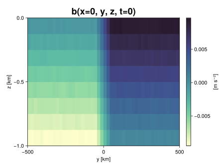
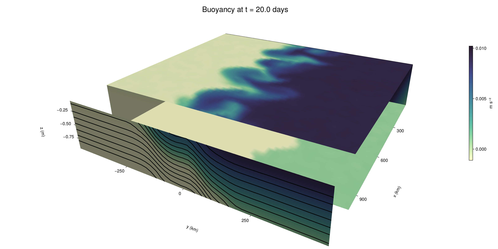

Baroclinic adjustment
In this example, we simulate the evolution and equilibration of a baroclinically unstable front.
Install dependencies
First let's make sure we have all required packages installed.
using Pkg
pkg"add Oceananigans, CairoMakie"using Oceananigans
using Oceananigans.UnitsGrid
We use a three-dimensional channel that is periodic in the x direction:
Lx = 1000kilometers # east-west extent [m]
Ly = 1000kilometers # north-south extent [m]
Lz = 1kilometers # depth [m]
grid = RectilinearGrid(size = (48, 48, 8),
x = (0, Lx),
y = (-Ly/2, Ly/2),
z = (-Lz, 0),
topology = (Periodic, Bounded, Bounded))48×48×8 RectilinearGrid{Float64, Periodic, Bounded, Bounded} on CPU with 3×3×3 halo
├── Periodic x ∈ [0.0, 1.0e6) regularly spaced with Δx=20833.3
├── Bounded y ∈ [-500000.0, 500000.0] regularly spaced with Δy=20833.3
└── Bounded z ∈ [-1000.0, 0.0] regularly spaced with Δz=125.0Model
We built a HydrostaticFreeSurfaceModel with an ImplicitFreeSurface solver. Regarding Coriolis, we use a beta-plane centered at 45° South.
model = HydrostaticFreeSurfaceModel(; grid,
coriolis = BetaPlane(latitude = -45),
buoyancy = BuoyancyTracer(),
tracers = :b,
momentum_advection = WENO(),
tracer_advection = WENO())HydrostaticFreeSurfaceModel{CPU, RectilinearGrid}(time = 0 seconds, iteration = 0)
├── grid: 48×48×8 RectilinearGrid{Float64, Periodic, Bounded, Bounded} on CPU with 3×3×3 halo
├── timestepper: QuasiAdamsBashforth2TimeStepper
├── tracers: b
├── closure: Nothing
├── buoyancy: BuoyancyTracer with ĝ = NegativeZDirection()
├── free surface: ImplicitFreeSurface with gravitational acceleration 9.80665 m s⁻²
│ └── solver: FFTImplicitFreeSurfaceSolver
└── coriolis: BetaPlane{Float64}We start our simulation from rest with a baroclinically unstable buoyancy distribution. We use ramp(y, Δy), defined below, to specify a front with width Δy and horizontal buoyancy gradient M². We impose the front on top of a vertical buoyancy gradient N² and a bit of noise.
"""
ramp(y, Δy)
Linear ramp from 0 to 1 between -Δy/2 and +Δy/2.
For example:
```
y < -Δy/2 => ramp = 0
-Δy/2 < y < -Δy/2 => ramp = y / Δy
y > Δy/2 => ramp = 1
```
"""
ramp(y, Δy) = min(max(0, y/Δy + 1/2), 1)
N² = 1e-5 # [s⁻²] buoyancy frequency / stratification
M² = 1e-7 # [s⁻²] horizontal buoyancy gradient
Δy = 100kilometers # width of the region of the front
Δb = Δy * M² # buoyancy jump associated with the front
ϵb = 1e-2 * Δb # noise amplitude
bᵢ(x, y, z) = N² * z + Δb * ramp(y, Δy) + ϵb * randn()
set!(model, b=bᵢ)Let's visualize the initial buoyancy distribution.
using CairoMakie
# Build coordinates with units of kilometers
x, y, z = 1e-3 .* nodes(grid, (Center(), Center(), Center()))
b = model.tracers.b
fig, ax, hm = heatmap(y, z, interior(b)[1, :, :],
colormap=:deep,
axis = (xlabel = "y [km]",
ylabel = "z [km]",
title = "b(x=0, y, z, t=0)",
titlesize = 24))
Colorbar(fig[1, 2], hm, label = "[m s⁻²]")
fig
Simulation
Now let's build a Simulation.
simulation = Simulation(model, Δt=20minutes, stop_time=20days)Simulation of HydrostaticFreeSurfaceModel{CPU, RectilinearGrid}(time = 0 seconds, iteration = 0)
├── Next time step: 20 minutes
├── Elapsed wall time: 0 seconds
├── Wall time per iteration: NaN days
├── Stop time: 20 days
├── Stop iteration : Inf
├── Wall time limit: Inf
├── Callbacks: OrderedDict with 4 entries:
│ ├── stop_time_exceeded => Callback of stop_time_exceeded on IterationInterval(1)
│ ├── stop_iteration_exceeded => Callback of stop_iteration_exceeded on IterationInterval(1)
│ ├── wall_time_limit_exceeded => Callback of wall_time_limit_exceeded on IterationInterval(1)
│ └── nan_checker => Callback of NaNChecker for u on IterationInterval(100)
├── Output writers: OrderedDict with no entries
└── Diagnostics: OrderedDict with no entriesWe add a TimeStepWizard callback to adapt the simulation's time-step,
conjure_time_step_wizard!(simulation, IterationInterval(20), cfl=0.2, max_Δt=20minutes)Also, we add a callback to print a message about how the simulation is going,
using Printf
wall_clock = Ref(time_ns())
function print_progress(sim)
u, v, w = model.velocities
progress = 100 * (time(sim) / sim.stop_time)
elapsed = (time_ns() - wall_clock[]) / 1e9
@printf("[%05.2f%%] i: %d, t: %s, wall time: %s, max(u): (%6.3e, %6.3e, %6.3e) m/s, next Δt: %s\n",
progress, iteration(sim), prettytime(sim), prettytime(elapsed),
maximum(abs, u), maximum(abs, v), maximum(abs, w), prettytime(sim.Δt))
wall_clock[] = time_ns()
return nothing
end
add_callback!(simulation, print_progress, IterationInterval(100))Diagnostics/Output
Here, we save the buoyancy, $b$, at the edges of our domain as well as the zonal ($x$) average of buoyancy.
u, v, w = model.velocities
ζ = ∂x(v) - ∂y(u)
B = Average(b, dims=1)
U = Average(u, dims=1)
V = Average(v, dims=1)
filename = "baroclinic_adjustment"
save_fields_interval = 0.5day
slicers = (east = (grid.Nx, :, :),
north = (:, grid.Ny, :),
bottom = (:, :, 1),
top = (:, :, grid.Nz))
for side in keys(slicers)
indices = slicers[side]
simulation.output_writers[side] = JLD2OutputWriter(model, (; b, ζ);
filename = filename * "_$(side)_slice",
schedule = TimeInterval(save_fields_interval),
overwrite_existing = true,
indices)
end
simulation.output_writers[:zonal] = JLD2OutputWriter(model, (; b=B, u=U, v=V);
filename = filename * "_zonal_average",
schedule = TimeInterval(save_fields_interval),
overwrite_existing = true)JLD2OutputWriter scheduled on TimeInterval(12 hours):
├── filepath: ./baroclinic_adjustment_zonal_average.jld2
├── 3 outputs: (b, u, v)
├── array type: Array{Float64}
├── including: [:grid, :coriolis, :buoyancy, :closure]
└── max filesize: Inf YiBNow we're ready to run.
@info "Running the simulation..."
run!(simulation)
@info "Simulation completed in " * prettytime(simulation.run_wall_time)[ Info: Running the simulation...
[ Info: Initializing simulation...
[00.00%] i: 0, t: 0 seconds, wall time: 29.483 seconds, max(u): (0.000e+00, 0.000e+00, 0.000e+00) m/s, next Δt: 20 minutes
[ Info: ... simulation initialization complete (20.946 seconds)
[ Info: Executing initial time step...
[ Info: ... initial time step complete (19.046 seconds).
[06.94%] i: 100, t: 1.389 days, wall time: 51.259 seconds, max(u): (1.271e-01, 1.243e-01, 1.514e-03) m/s, next Δt: 20 minutes
[13.89%] i: 200, t: 2.778 days, wall time: 15.065 seconds, max(u): (2.160e-01, 1.991e-01, 1.914e-03) m/s, next Δt: 20 minutes
[20.83%] i: 300, t: 4.167 days, wall time: 15.157 seconds, max(u): (2.859e-01, 2.761e-01, 1.912e-03) m/s, next Δt: 20 minutes
[27.78%] i: 400, t: 5.556 days, wall time: 15.017 seconds, max(u): (3.832e-01, 3.394e-01, 2.020e-03) m/s, next Δt: 20 minutes
[34.72%] i: 500, t: 6.944 days, wall time: 14.978 seconds, max(u): (4.807e-01, 4.581e-01, 1.889e-03) m/s, next Δt: 20 minutes
[41.67%] i: 600, t: 8.333 days, wall time: 15.055 seconds, max(u): (6.274e-01, 6.513e-01, 2.638e-03) m/s, next Δt: 20 minutes
[48.61%] i: 700, t: 9.722 days, wall time: 15.085 seconds, max(u): (8.320e-01, 9.762e-01, 3.614e-03) m/s, next Δt: 20 minutes
[55.56%] i: 800, t: 11.111 days, wall time: 15.173 seconds, max(u): (1.109e+00, 1.248e+00, 4.929e-03) m/s, next Δt: 20 minutes
[62.50%] i: 900, t: 12.500 days, wall time: 15.087 seconds, max(u): (1.398e+00, 1.217e+00, 5.322e-03) m/s, next Δt: 20 minutes
[69.44%] i: 1000, t: 13.889 days, wall time: 15.010 seconds, max(u): (1.275e+00, 1.050e+00, 4.004e-03) m/s, next Δt: 20 minutes
[76.39%] i: 1100, t: 15.278 days, wall time: 15.021 seconds, max(u): (1.274e+00, 9.173e-01, 3.176e-03) m/s, next Δt: 20 minutes
[83.33%] i: 1200, t: 16.667 days, wall time: 15.143 seconds, max(u): (1.286e+00, 1.041e+00, 4.046e-03) m/s, next Δt: 20 minutes
[90.28%] i: 1300, t: 18.056 days, wall time: 15.309 seconds, max(u): (1.202e+00, 1.350e+00, 3.180e-03) m/s, next Δt: 20 minutes
[97.22%] i: 1400, t: 19.444 days, wall time: 15.781 seconds, max(u): (1.183e+00, 1.225e+00, 2.365e-03) m/s, next Δt: 20 minutes
[ Info: Simulation is stopping after running for 4.395 minutes.
[ Info: Simulation time 20 days equals or exceeds stop time 20 days.
[ Info: Simulation completed in 4.399 minutes
Visualization
All that's left is to make a pretty movie. Actually, we make two visualizations here. First, we illustrate how to make a 3D visualization with Makie's Axis3 and Makie.surface. Then we make a movie in 2D. We use CairoMakie in this example, but note that using GLMakie is more convenient on a system with OpenGL, as figures will be displayed on the screen.
using CairoMakieThree-dimensional visualization
We load the saved buoyancy output on the top, bottom, north, and east surface as FieldTimeSerieses.
filename = "baroclinic_adjustment"
sides = keys(slicers)
slice_filenames = NamedTuple(side => filename * "_$(side)_slice.jld2" for side in sides)
b_timeserieses = (east = FieldTimeSeries(slice_filenames.east, "b"),
north = FieldTimeSeries(slice_filenames.north, "b"),
bottom = FieldTimeSeries(slice_filenames.bottom, "b"),
top = FieldTimeSeries(slice_filenames.top, "b"))
B_timeseries = FieldTimeSeries(filename * "_zonal_average.jld2", "b")
times = B_timeseries.times
grid = B_timeseries.grid48×48×8 RectilinearGrid{Float64, Periodic, Bounded, Bounded} on CPU with 3×3×3 halo
├── Periodic x ∈ [0.0, 1.0e6) regularly spaced with Δx=20833.3
├── Bounded y ∈ [-500000.0, 500000.0] regularly spaced with Δy=20833.3
└── Bounded z ∈ [-1000.0, 0.0] regularly spaced with Δz=125.0We build the coordinates. We rescale horizontal coordinates to kilometers.
xb, yb, zb = nodes(b_timeserieses.east)
xb = xb ./ 1e3 # convert m -> km
yb = yb ./ 1e3 # convert m -> km
Nx, Ny, Nz = size(grid)
x_xz = repeat(x, 1, Nz)
y_xz_north = y[end] * ones(Nx, Nz)
z_xz = repeat(reshape(z, 1, Nz), Nx, 1)
x_yz_east = x[end] * ones(Ny, Nz)
y_yz = repeat(y, 1, Nz)
z_yz = repeat(reshape(z, 1, Nz), grid.Ny, 1)
x_xy = x
y_xy = y
z_xy_top = z[end] * ones(grid.Nx, grid.Ny)
z_xy_bottom = z[1] * ones(grid.Nx, grid.Ny)Then we create a 3D axis. We use zonal_slice_displacement to control where the plot of the instantaneous zonal average flow is located.
fig = Figure(size = (1600, 800))
zonal_slice_displacement = 1.2
ax = Axis3(fig[2, 1],
aspect=(1, 1, 1/5),
xlabel = "x (km)",
ylabel = "y (km)",
zlabel = "z (m)",
xlabeloffset = 100,
ylabeloffset = 100,
zlabeloffset = 100,
limits = ((x[1], zonal_slice_displacement * x[end]), (y[1], y[end]), (z[1], z[end])),
elevation = 0.45,
azimuth = 6.8,
xspinesvisible = false,
zgridvisible = false,
protrusions = 40,
perspectiveness = 0.7)Axis3()We use data from the final savepoint for the 3D plot. Note that this plot can easily be animated by using Makie's Observable. To dive into Observables, check out Makie.jl's Documentation.
n = length(times)41Now let's make a 3D plot of the buoyancy and in front of it we'll use the zonally-averaged output to plot the instantaneous zonal-average of the buoyancy.
b_slices = (east = interior(b_timeserieses.east[n], 1, :, :),
north = interior(b_timeserieses.north[n], :, 1, :),
bottom = interior(b_timeserieses.bottom[n], :, :, 1),
top = interior(b_timeserieses.top[n], :, :, 1))
# Zonally-averaged buoyancy
B = interior(B_timeseries[n], 1, :, :)
clims = 1.1 .* extrema(b_timeserieses.top[n][:])
kwargs = (colorrange=clims, colormap=:deep)
surface!(ax, x_yz_east, y_yz, z_yz; color = b_slices.east, kwargs...)
surface!(ax, x_xz, y_xz_north, z_xz; color = b_slices.north, kwargs...)
surface!(ax, x_xy, y_xy, z_xy_bottom ; color = b_slices.bottom, kwargs...)
surface!(ax, x_xy, y_xy, z_xy_top; color = b_slices.top, kwargs...)
sf = surface!(ax, zonal_slice_displacement .* x_yz_east, y_yz, z_yz; color = B, kwargs...)
contour!(ax, y, z, B; transformation = (:yz, zonal_slice_displacement * x[end]),
levels = 15, linewidth = 2, color = :black)
Colorbar(fig[2, 2], sf, label = "m s⁻²", height = Relative(0.4), tellheight=false)
title = "Buoyancy at t = " * string(round(times[n] / day, digits=1)) * " days"
fig[1, 1:2] = Label(fig, title; fontsize = 24, tellwidth = false, padding = (0, 0, -120, 0))
rowgap!(fig.layout, 1, Relative(-0.2))
colgap!(fig.layout, 1, Relative(-0.1))
save("baroclinic_adjustment_3d.png", fig)
Two-dimensional movie
We make a 2D movie that shows buoyancy $b$ and vertical vorticity $ζ$ at the surface, as well as the zonally-averaged zonal and meridional velocities $U$ and $V$ in the $(y, z)$ plane. First we load the FieldTimeSeries and extract the additional coordinates we'll need for plotting
ζ_timeseries = FieldTimeSeries(slice_filenames.top, "ζ")
U_timeseries = FieldTimeSeries(filename * "_zonal_average.jld2", "u")
B_timeseries = FieldTimeSeries(filename * "_zonal_average.jld2", "b")
V_timeseries = FieldTimeSeries(filename * "_zonal_average.jld2", "v")
xζ, yζ, zζ = nodes(ζ_timeseries)
yv = ynodes(V_timeseries)
xζ = xζ ./ 1e3 # convert m -> km
yζ = yζ ./ 1e3 # convert m -> km
yv = yv ./ 1e3 # convert m -> km49-element Vector{Float64}:
-500.0
-479.1666666666667
-458.3333333333333
-437.5
-416.6666666666667
-395.8333333333333
-375.0
-354.1666666666667
-333.3333333333333
-312.5
-291.6666666666667
-270.8333333333333
-250.0
-229.16666666666666
-208.33333333333334
-187.5
-166.66666666666666
-145.83333333333334
-125.0
-104.16666666666667
-83.33333333333333
-62.5
-41.666666666666664
-20.833333333333332
0.0
20.833333333333332
41.666666666666664
62.5
83.33333333333333
104.16666666666667
125.0
145.83333333333334
166.66666666666666
187.5
208.33333333333334
229.16666666666666
250.0
270.8333333333333
291.6666666666667
312.5
333.3333333333333
354.1666666666667
375.0
395.8333333333333
416.6666666666667
437.5
458.3333333333333
479.1666666666667
500.0Next, we set up a plot with 4 panels. The top panels are large and square, while the bottom panels get a reduced aspect ratio through rowsize!.
set_theme!(Theme(fontsize=24))
fig = Figure(size=(1800, 1000))
axb = Axis(fig[1, 2], xlabel="x (km)", ylabel="y (km)", aspect=1)
axζ = Axis(fig[1, 3], xlabel="x (km)", ylabel="y (km)", aspect=1, yaxisposition=:right)
axu = Axis(fig[2, 2], xlabel="y (km)", ylabel="z (m)")
axv = Axis(fig[2, 3], xlabel="y (km)", ylabel="z (m)", yaxisposition=:right)
rowsize!(fig.layout, 2, Relative(0.3))To prepare a plot for animation, we index the timeseries with an Observable,
n = Observable(1)
b_top = @lift interior(b_timeserieses.top[$n], :, :, 1)
ζ_top = @lift interior(ζ_timeseries[$n], :, :, 1)
U = @lift interior(U_timeseries[$n], 1, :, :)
V = @lift interior(V_timeseries[$n], 1, :, :)
B = @lift interior(B_timeseries[$n], 1, :, :)Observable([-0.009384723251079096 -0.00811668711811112 -0.006880017011983206 -0.005633054064084719 -0.004373373466493567 -0.003133420103906027 -0.00184238528659699 -0.0006001448245932845; -0.009388690523063362 -0.008136611142762205 -0.006870650246116533 -0.005617095032325618 -0.004395164615796553 -0.00311709207025718 -0.0018975195521726467 -0.0006406472991939602; -0.009364014013380374 -0.00812186621894809 -0.006906993384406718 -0.005630262131533022 -0.004359153905870686 -0.0031372561428760215 -0.0018821502868383811 -0.0006172098694636707; -0.009389513689816586 -0.008106173765184691 -0.00686819707493911 -0.005634332086422493 -0.0043640774882833955 -0.0031272349159120368 -0.001875886019632558 -0.0006164702060005376; -0.009396257884620262 -0.00813121126582416 -0.006864661900144204 -0.005649381111189852 -0.00436359189071362 -0.003097435197122436 -0.0018783932370107055 -0.0006271261865418388; -0.009378993319901061 -0.008116897431277997 -0.006886921457132859 -0.0055997879462399884 -0.0043617538523590274 -0.0031406289428395017 -0.0018832333050351879 -0.0006329302105655148; -0.00939332967617157 -0.008110816625154144 -0.006891593038564555 -0.005638978738034922 -0.004396501006361933 -0.0031092348987283107 -0.0018654770080741413 -0.0006415543025922776; -0.009390318134375046 -0.008116996817215118 -0.006881379274717332 -0.005635679400738935 -0.004361540160325274 -0.00308592967664038 -0.0018698053501227713 -0.0006062426292596568; -0.009397335298468382 -0.008124560389161432 -0.006876634004786623 -0.005634112284317786 -0.0043653146703450775 -0.003151608614668447 -0.001859943809609086 -0.0006237769258945208; -0.009363078210151194 -0.008145667996048624 -0.0068637836712603624 -0.005630263433331713 -0.004383752310108256 -0.003112389476741938 -0.0018859446964175945 -0.0006397144778005733; -0.009376583870373345 -0.008118332708991635 -0.006887216685032927 -0.005627122109310098 -0.004400271738948213 -0.0031347444109004353 -0.0018555597767935625 -0.0006360359949904991; -0.009375057347491151 -0.008117944657276676 -0.006876839979624612 -0.005622979663153091 -0.004395463782299203 -0.00311434032010646 -0.0018947334177220954 -0.0006177157930323572; -0.009365053392498933 -0.008104873338398173 -0.006869008450185113 -0.005623758155494621 -0.004368019023715044 -0.0031138083171266388 -0.0018644747874153585 -0.0006146482030039145; -0.009363554890343169 -0.008128091710265297 -0.006885405516093825 -0.005600998100599036 -0.004370611317288959 -0.0031392446881968153 -0.0018728202843194101 -0.0006356248261157059; -0.00936941304705055 -0.008122353731282247 -0.006882893260684902 -0.005608261073694785 -0.00437109011685334 -0.0031232300893467868 -0.001877921951257579 -0.000628444907174155; -0.009386331111587107 -0.008127262373018947 -0.0068749183720553135 -0.005623584912987786 -0.004366575811767013 -0.003118165265989302 -0.0018778390981148477 -0.0006287319715735619; -0.009359184268312568 -0.00813717861701872 -0.006877214485534344 -0.005632353775592275 -0.004372590076983942 -0.0031003076936315273 -0.001877699829110984 -0.0006319319048347301; -0.009354733546956871 -0.008120800783573775 -0.0068589637142129215 -0.005649054825882318 -0.004370699602830211 -0.0031218246910017203 -0.0018603133190348115 -0.0006059137885074858; -0.009374298775494087 -0.008149065412276805 -0.006896167308891307 -0.005620460109419221 -0.004359358479289441 -0.003128509774462662 -0.0018620085449691135 -0.0006161931212372618; -0.009358017062409602 -0.008136489269792872 -0.006888847440545503 -0.00560941008749884 -0.00436608276125575 -0.0031089362017814744 -0.0018785555981665966 -0.0006120325610354774; -0.009370602736384915 -0.00812265143410872 -0.006864831986020514 -0.005610879020774495 -0.004375797097762167 -0.003130226783082432 -0.00185913698531089 -0.0006322539633998533; -0.009369360263859771 -0.008136039405807845 -0.006884594032421962 -0.005626439760546137 -0.004364708996685492 -0.0031318278940789205 -0.0018825383752893463 -0.0006268279194747577; -0.00749296761345037 -0.006257840027099843 -0.005000876350240344 -0.0037595794128068983 -0.0024968845630641582 -0.001254490431705758 -3.079382157832695e-5 0.0012611047776048049; -0.0054112831684795136 -0.004142827826735038 -0.0029156273229476886 -0.0016850797624337079 -0.0004341236553280638 0.0008323438886578613 0.002093689612065472 0.003322270951209855; -0.003347475873375874 -0.0020945631483689124 -0.0008072594436476289 0.000435627913348222 0.0016807161882946029 0.002943347078639126 0.004158310039135728 0.005418629805169675; -0.0012757499990716334 -1.629891118089789e-5 0.0012570087955301435 0.0024944818600879325 0.0037616056614626376 0.00499691555410589 0.006229540376801269 0.007479388933547716; 0.0006326906041454638 0.0018770111584653592 0.0031249349989437825 0.004394286736732168 0.005631105229855929 0.0068850711216284525 0.00811243688015015 0.009343701764825962; 0.00062472908071286 0.0018866807267939243 0.003132221428423764 0.004363925128381968 0.005610242976106429 0.006855103552539634 0.008118775929858562 0.009372852994183481; 0.0006237235975200605 0.0018795458688240247 0.003132483725840204 0.004346043771456447 0.005632364935987669 0.006901909909970247 0.00812401989458138 0.00938673155654115; 0.0006407051051093698 0.0018688184358795993 0.0031191610430245428 0.004385918502875411 0.005629701574310556 0.0068710344774263405 0.0081328051008431 0.00936748658889273; 0.0006388275912603766 0.0018694762696983046 0.0031483823446298103 0.00439081842794761 0.005618244099420521 0.0069045566216869 0.008134873254850178 0.009373544154607982; 0.000625015876305582 0.0018488993209116785 0.003150253814727256 0.004381700146308769 0.005606126404936883 0.006870857363230503 0.008113424357680388 0.009345485843658642; 0.0006286779815174161 0.0018775078095704131 0.0031243808209966834 0.004387164820062344 0.005621243849787838 0.006854454612411002 0.008112749157421311 0.009372186508288983; 0.0006247576984738402 0.0018899741964456403 0.003120504233043433 0.004377116820464799 0.0056462484690086015 0.0068692908362994595 0.008120690174553618 0.009351386425934959; 0.000630314863612074 0.001862595560997514 0.003130454467902473 0.004366362994053595 0.0056304090473323284 0.006885235290419918 0.00812684308368312 0.009378960545178719; 0.0006534845803447481 0.0018749064472095894 0.00313970883151822 0.004377666477951966 0.005621792681238419 0.006907210337263439 0.008160363100944458 0.009370235106826557; 0.0006221805533608977 0.0018798867914204458 0.003163336438974828 0.004402168252828538 0.005629792570935848 0.006874312033336599 0.008113155058045492 0.009388505752267918; 0.0006571697741866183 0.0019022996149349323 0.0031183022685377245 0.004350524982282679 0.005614517376505312 0.00687837779350725 0.008150425081082007 0.009352098124896664; 0.0005911104084477879 0.0018688300060237418 0.003127206121693768 0.0043607582453776775 0.005643026864231397 0.006882277809400095 0.008110838941749427 0.009365672620465964; 0.0006053359902669517 0.0018984319642328538 0.003123230436585708 0.004373150734381594 0.005638937906645904 0.006866663808513013 0.008100719586971198 0.00938772909912272; 0.0006423641580281769 0.0018875664438644283 0.003085376380968821 0.004377107854074994 0.005634018602654729 0.006864408181387074 0.008116231970098371 0.009400448375778575; 0.0005951652801049909 0.001835661469658798 0.0031040662204832696 0.00438824120215013 0.005622845988733554 0.006870618073441606 0.008144086975940266 0.009385945065626235; 0.0006299594955582693 0.0018723429671304163 0.003130377150295053 0.004379873020900464 0.005645707568444032 0.006874923198755348 0.00809033811137177 0.009368340236539898; 0.0006100234803814048 0.0018514097180396287 0.003139947518241476 0.004352764004081726 0.005656639077169749 0.006878414008523073 0.008125472460896477 0.009386533918906892; 0.0006175913736271713 0.0019036873430345821 0.003137353542883916 0.0043640725870802395 0.005636015144290144 0.006889097673581601 0.008092115945332594 0.009394268751842872; 0.0005734376172735541 0.0018631769760417926 0.0031415749932978527 0.004374771153876313 0.005617645928529129 0.0068658507319065455 0.008087557670051735 0.00936928766917666; 0.0006122312063993369 0.001900685807856407 0.0031332654646972816 0.0043551183303657945 0.005603777763125353 0.006887380160431268 0.008113957617817394 0.009375731044898633; 0.000647001903517062 0.0018872223613241384 0.003134557214583803 0.004360069093618408 0.005596780024570346 0.006865588821791407 0.008144295729400957 0.009377325534713779])
and then build our plot:
hm = heatmap!(axb, xb, yb, b_top, colorrange=(0, Δb), colormap=:thermal)
Colorbar(fig[1, 1], hm, flipaxis=false, label="Surface b(x, y) (m s⁻²)")
hm = heatmap!(axζ, xζ, yζ, ζ_top, colorrange=(-5e-5, 5e-5), colormap=:balance)
Colorbar(fig[1, 4], hm, label="Surface ζ(x, y) (s⁻¹)")
hm = heatmap!(axu, yb, zb, U; colorrange=(-5e-1, 5e-1), colormap=:balance)
Colorbar(fig[2, 1], hm, flipaxis=false, label="Zonally-averaged U(y, z) (m s⁻¹)")
contour!(axu, yb, zb, B; levels=15, color=:black)
hm = heatmap!(axv, yv, zb, V; colorrange=(-1e-1, 1e-1), colormap=:balance)
Colorbar(fig[2, 4], hm, label="Zonally-averaged V(y, z) (m s⁻¹)")
contour!(axv, yb, zb, B; levels=15, color=:black)Finally, we're ready to record the movie.
frames = 1:length(times)
record(fig, filename * ".mp4", frames, framerate=8) do i
n[] = i
endThis page was generated using Literate.jl.